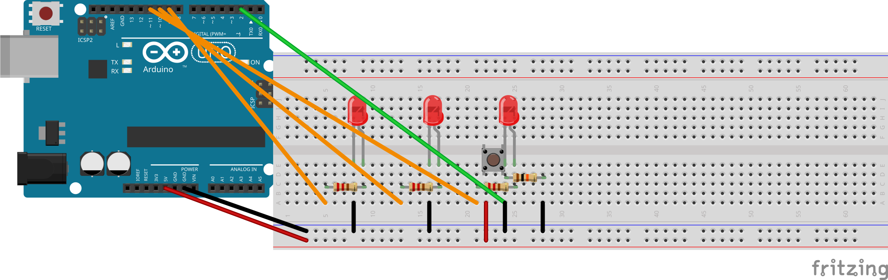

באבן דרך זו מוסיפים כפתור לחיצה לברדבורד ומחליטים מה הכפתור יעשה. יש שלוש אפשרויות. בוחרים את זו שמתאימה לתבנית שאתם בונים. אחר כך משתמשים בקלוד קוד כדי לשנות את הקוד כך שהכפתור באמת יעשה את זה.
🔌שלב 1 — מחווטים את הכפתור
אותו חיווט כמו גרסה 1 אבן דרך 7: הכפתור לרוחב החריץ המרכזי, רגל A ל-5 V, רגל B לרגל 2 של הארדואינו, ונגד הורדה של 10 קילו-אוהם מרגל 2 ל-GND. בכרטיסיית העזר R1 חיווט 3 יש תרשים מלא.
⚠️תזכורת על נגד ההורדה
הנגד של 10 קילו-אוהם הולך בין רגל 2 ל-GND. לא בין 5 V ל-GND. טעות כאן גורמת לארדואינו להתאתחל. לא בטוחים? — קודם כל מתקנים את זה עם R1.

בתמונה: אפשרות ב' (רדיפה) — שלושה לדים + כפתור. אפשרות א' (לסירוגין): אותו חיווט של הכפתור, רק עם לדים 1 ו-2 — ראו R1 חיווט 3. אפשרות ג' (נשימה): אותו חיווט של הכפתור, רק עם לד 1. בכל שלוש האפשרויות הכפתור זהה: 5V ← כפתור ← רגל 2, עם נגד הורדה 10 קילו-אוהם ← GND.
📋שלב 2 — בוחרים התנהגות אחת לכפתור
התנהגות א — החלפת מצב
לחיצה אחת — מפעיל. עוד לחיצה — עוצר. עוד לחיצה — מפעיל שוב.
התנהגות ב — מעבר בין תבניות
הלחיצה על הכפתור עוברת בין תבניות שונות. לחיצה אחת — לסירוגין, עוד לחיצה — רדיפה, עוד לחיצה — נשימה, עוד לחיצה — חוזרים לסירוגין. (לאפשרות הזאת צריך את כל שלושת הלדים מחווטים.)
התנהגות ג — שליטת מהירות
כשהכפתור לחוץ — התבנית רצה מהר יותר. בשחרור הכפתור — חוזרים למהירות רגילה.
כותבים את הבחירה שלכם כאן:
💻שלב 3 — משתמשים בקלוד קוד גרסה 2 כדי שהכפתור יעשה את ההתנהגות שבחרתם
אותה משמעת של (א)(ב)(ג) כמו באבן דרך 3. מתארים קודם את ההתנהגות שאתם רוצים. אחר כך מבקשים מקלוד קוד לעזור לשנות את הקוד.
(א) מה אני רוצה שיקרה:
________________________________
(ב) מה קורה עכשיו:
________________________________
(ג) מה כבר ניסיתי:
________________________________
👀מה אמורים לראות
הכפתור משנה את התבנית שלכם בדרך שבחרתם. התנהגות א: לחיצה מפעילה ועוצרת. התנהגות ב: לחיצה עוברת בין תבניות. התנהגות ג: כשהכפתור לחוץ — ריצה מהירה יותר.
אפשר להראות את ההתנהגות למורה ולומר "זה מה שבניתי".
✅סיימנו כש
הכפתור מחווט עם נגד ההורדה של 10 קילו-אוהם במיקום הנכון
בחרתם התנהגות לכפתור (א, ב, או ג)
הקוד שונה דרך קלוד קוד גרסה 2 לבצע את ההתנהגות שבחרתם
הכפתור באמת עושה את מה שבחרתם
🪄תקועים?
הכפתור לא עושה כלום? קודם כל בודקים את מיקום נגד ההורדה ב-R1. אם החיווט נכון אבל הכפתור עדיין לא עובד, כנראה שהקוד צריך pinMode(BUTTON, INPUT); ב-setup() ו-digitalRead() ב-loop(). אפשר לבקש מקלוד קוד לבדוק את הקוד בשביל זה. אם התשובה של קלוד לא עוזרת, קוראים למורה.